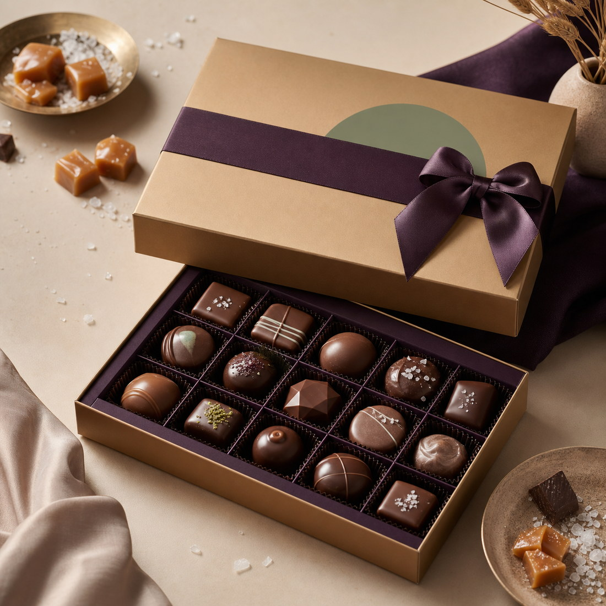
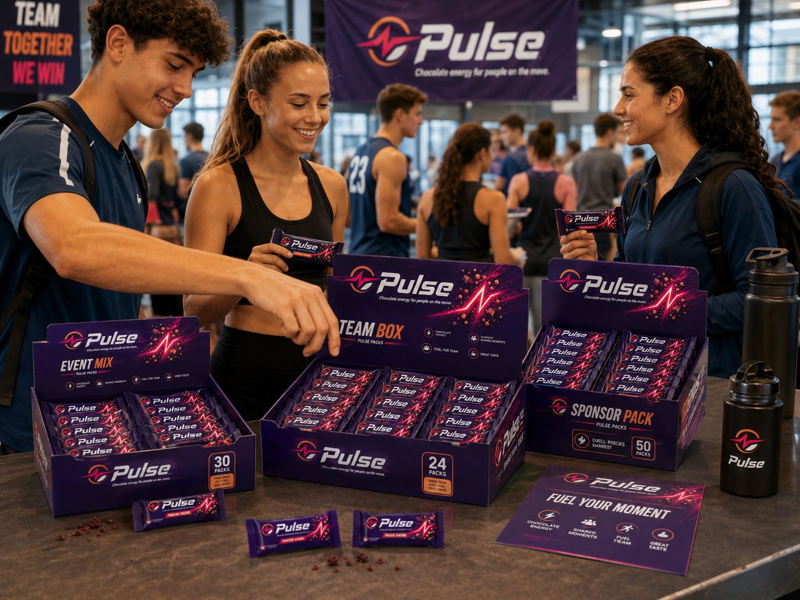
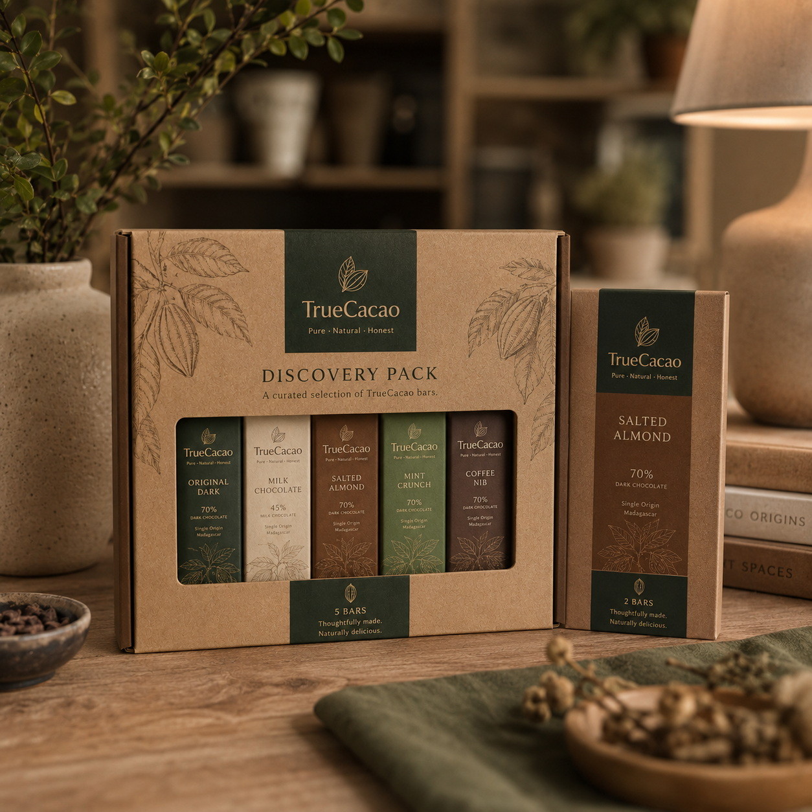

Onze merken
DutchDelight Chocolates ontwikkelt drie merken. Ontdek welke chocolade past bij uw winkel, gasten of zakelijke relaties.

Luxe en gastvrijheid
Noire
Van een geschenkdoos voor een relatie tot een chocolaatje bij de espresso. Noire is er voor delicatessenwinkels, luxe warenhuizen en hotels.
Ontdek Noire
Sport, studie en onderweg
Pulse
Een reep in de sportkantine of een portie voor onderweg. Met Bars, Bites en Packs past Pulse in de schoolkantine, op evenementen en in verkoopautomaten.
Ontdek Pulse
Bewust en natuurlijk
TrueCacao
Pure chocolade voor consumenten die bewust kiezen. TrueCacao past op het schap van een biowinkel, naast de koffie of in een zakelijk cadeaupakket.
Ontdek TrueCacaoVergelijk de merken
| Merk | Positionering | Eindgebruikers | Belangrijke verkoopkanalen |
|---|---|---|---|
| Noire | Luxe en premium | Chocoladeliefhebbers, cadeaukopers, horeca en delicatessenklanten | Delicatessenwinkels, luxe retail, horeca, warenhuizen en relatiegeschenken |
| Pulse | Energie en onderweg | Jongeren, studenten, sporters, forenzen en actieve volwassenen | Sportkantines, scholen, vending, tankstations, events en bedrijfsrestaurants |
| TrueCacao | Bewust en duurzaam gepositioneerd | Bewuste consumenten, young professionals, flexitariërs en vegan shoppers | Bio-retail, koffiebars, conceptstores, bedrijfscatering en cadeaupakketten |